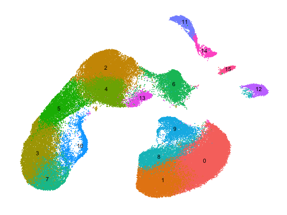
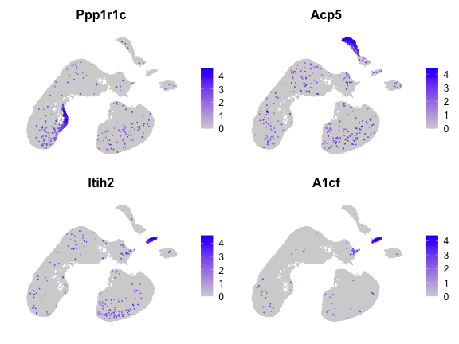

a05_moca_100k.RmdHere we apply haystack to 100k cells from the Mouse Organogenesis Cell Atlas (MOCA). The sparse matrix data was downloaded from the MOCA website. The data was converted into a Seurat object and processed following the standard pipeline.
x <- read_rds(here("data-raw/moca_100k.rds")) x
## An object of class Seurat
## 16811 features across 100000 samples within 1 assay
## Active assay: RNA (16811 features, 2000 variable features)
## 2 dimensional reductions calculated: pca, umap
We run haystack using the method highD with the default threshold for detection, which is more than 1.
system.time({ res <- haystack(x, method = "highD") })
## user system elapsed
## 2397.740 480.219 2878.232It takes 48 minutes to complete in a standard personal computer. Here we show the top 10 genes selected by haystack.
top <- show_result_haystack(res, n = 10) top
## D_KL log.p.vals log.p.adj T.counts
## Ppp1r1c 0.17135507 -176.2468 -172.0212 1041
## Itih2 0.17876325 -172.0384 -167.8128 634
## A1cf 0.27125529 -168.8895 -164.6639 418
## Gm43449 0.15025195 -161.1296 -156.9040 585
## Fyb 0.14040878 -158.3336 -154.1080 590
## Apob 0.15036594 -157.6220 -153.3965 539
## Trim55 0.12758730 -156.5981 -152.3725 640
## Inpp5d 0.10239601 -152.3932 -148.1676 881
## Abcc2 0.23483323 -150.4938 -146.2682 359
## Cdh19 0.09594113 -149.7875 -145.5619 903And here we plot the expression of the top 4 genes.
FeaturePlot(x, rownames(top)[1:4], order = TRUE) & NoAxes()
